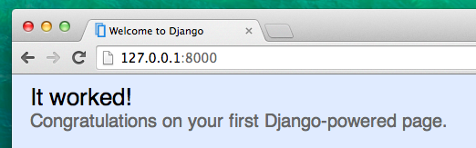

Les urls Django
Nous sommes sur le point de construire notre première page web : la page d'accueil de notre blog ! Avant de passer à la partie code, apprenons-en un peu plus sur les urls Django.
Qu'est-ce qu'une URL ?
Une URL est simplement une adresse web. Vous pouvez voir une URL à chaque fois que vous visitez un site web: l'URL se trouve dans la barre d'adresse (hé oui! 127.0.0.1:8000 est aussi une URL ! https://djangogirls.org est aussi une URL) :

Chaque page internet a besoin de sa propre URL. Cela permet à votre application de savoir ce qu'elle doit afficher à un utilisateur lorsqu'il entre une URL. Dans Django, nous utilisons un outil appelé URLconf (configuration des URLs) : c'est un ensemble de patterns que Django va essayer de faire correspondre avec l'URL reçue afin d'afficher la vue correspondante.
Comment les URLs fonctionnent-elles dans Django ?
Ouvrons le fichier mysite/urls.py dans notre éditeur de code et regardons à quoi il ressemble :
"""mysite URL Configuration
[...]
"""
from django.conf.urls import url
from django.contrib import admin
urlpatterns = [
url(r'^admin/', admin.site.urls),
]
Comme vous pouvez le voir, Django nous a déjà préparé une partie du travail.
Les lignes encadrées par trois guillemets (""" ou ''') sont appelées docstrings ; nous pouvons les ajouter au début de nos fichiers, de nos classes ou de nos méthodes pour décrire ce qu'elles font. Ces lignes ne seront donc pas exécutées par Python.
Comme vous pouvez le voir, l'adresse de l'interface d'administration est déjà en place :
url(r'^admin/', admin.site.urls),
Cela signifie que pour chaque URL qui commence par admin/, Django affichera la vue correspondante. Dans cet exemple, vous pouvez constater que toutes les URLs liées à l'interface d'administration sont contenues dans une seule ligne : en plus d'être pratique, cela rend notre fichier beaucoup plus propre et lisible.
Regex
Vous vous demandez sûrement comment Django arrive à faire correspondre les URLs aux vues correspondantes ? Bon, on respire un grand coup car ça va être un peu complexe. Django utilise des regex ("expressions régulières"). Les regex ont beaucoup (vraiment beaucoup ! ) de règles qui permettent de donner une description de la chaîne de caractères que l'on recherche (pattern). Étant donné que les regex sont un sujet avancé, nous ne rentrerons pas en détail dans leur fonctionnement.
Si vous avez quand-même envie de comprendre comment nous avons créé nos patterns, vous pouvez lire ce qui va suivre. Dans notre exemple, nous allons utiliser un petit sous ensemble des règles disponibles pour écrire des patterns :
^ -> le début du texte
$ -> la fin du texte
\d -> un chiffre
+ -> indique que l'expression précédente doit se répéter au moins une fois
() -> capture une partie du pattern
Tout ce qui ne fait pas partie de ces règles et qui est présent dans la description de ce que l'on cherche sera interprété de manière littérale.
Maintenant, imaginez que vous avez un site web qui a comme adresse : http://www.mysite.com/post/12345/. 12345 désigne le numéro de votre post.
Ce serait vraiment pénible de devoir écrire une vue différente pour chaque post que nous aimerions rédiger. Nous allons créer un pattern qui correspond à cette URL et qui nous permettra aussi d'extraire le numéro de post : ^post/(\d+)/$. Décomposons-la morceau par morceau pour comprendre ce que nous faisons :
- ^ post / indique à Django d'attraper toutes les url qui commencent par
post/(juste après^) - (\d+) signifie qu'il y aura un nombre (un ou plusieurs chiffres) que nous souhaitons capturer et extraire
- / dit à Django que le caractère
/doit suivre le nombre - $ marque la fin de l'URL, ce qui signifie que seules les chaînes de caractères se terminant par
/correspondrons au pattern
Votre première URL Django !
Bon, il est temps de créer votre première URL ! Nous voulons que "http://127.0.0.1:8000/" soit la page d’accueil de notre blog et qu'elle nous montre la liste des articles du blog.
Nous aimerions aussi garder notre fichier mysite/urls.py propre. Pour cela, nous allons importer les URLs de notre application blog dans notre fichier principal mysite/urls.py.
On y va : ajoutez une ligne qui va nous permettre d'importer blog.urls dans notre URL principale (''). Notez que nous utilisons ici la fonction include et qu'il est donc nécessaire de l'ajouter à l'import de la première ligne de notre fichier.
Votre fichier mysite/urls.py devrait maintenant ressembler à ceci:
from django.conf.urls import include, url
from django.contrib import admin
urlpatterns = [
url(r'^admin/', admin.site.urls),
url(r'', include('blog.urls')),
]
Django va maintenant rediriger tout ce qui arrive sur "http://127.0.0.1:8000/" vers blog.urls puis regardera dans ce fichier pour y trouver la suite des instructions à suivre.
En Python, les expressions régulière commencent toujours par r au début de la chaîne de caractères. Cela permet d'indiquer à Python que ce qui va suivre inclut des caractères qu'il ne doit pas interpréter en tant que code Python mais en tant qu'expression régulière.
blog.urls
Créez un nouveau fichier vide blog/urls.py. OK ! Ajoutez maintenant ces deux premières lignes :
from django.conf.urls import url
from . import views
Nous venons d'importer les méthodes de Django dont nous avons besoin ainsi que toutes les vues liées à notre application blog. Cependant, nous n'avons pas encore créé de vues ! Pas de problème : nous y viendrons dans une minute
Après ça, nous pouvons ajouter notre premier pattern d'URL:
urlpatterns = [
url(r'^$', views.post_list, name='post_list'),
]
Comme vous pouvez le voir, nous assignons une vue appelée post_list à l'URL ^$. Décomposons cette expression régulière : ^ pour début suivie de $ pour fin. Si nous mettons ces deux symboles ensemble, cela donne l'impression que nous sommes à la recherche d'une chaîne de caractères (string) vide. Ça tombe bien car c'est exactement ce que nous voulons ! En effet, l'URL resolver de Django ne considère pas 'http://127.0.0.1:8000/' comme faisant partie de l'URL. Ce pattern va donc indiquer à Django d'afficher la vue views.post_list à un utilisateur de votre site web qui se rendrait à l'adresse "http://127.0.0.1:8000/".
La dernière partie, name='post_list', est le nom de l'URL qui sera utilisée afin d'identifier la vue. Ce nom peut être le même que celui de la vue ou quelque chose de complètement différent. Plus tard dans ce tutoriel, nous allons utiliser les noms que nous avons donné à nos URLs. Il est donc important de donner un nom unique à chaque URL que nous créons. Pour vous faciliter la tâche, essayez de trouver des noms d'URLs simple à retenir.
Est-ce que tout fonctionne toujours ? Ouvrez votre navigateur à l'adresse http://127.0.0.1:8000/ pour vérifier.

"It works" a disparu ! Ne vous en faites pas : ce que vous voyez est juste une page d'erreur. N'ayez pas peur des pages d'erreur, elles sont en fait très utiles :
Sur cette page, vous pouvez lire le message no attribute 'post_list' (il manque un attribut "post_list"). Est-ce que post_list vous rappelle quelque chose ? Yep, c'est le nom que nous avons donné à notre vue ! Cela signifie que nous avons posé les fondations mais, que nous n'avons pas encore créé notre vue. Pas de problème, on y vient :).
Si vous voulez en savoir plus au sujet de la configuration des URLs dans Django, vous pouvez aller consulter la documentation officielle du framework : https://docs.djangoproject.com/fr/1.11/topics/http/urls/